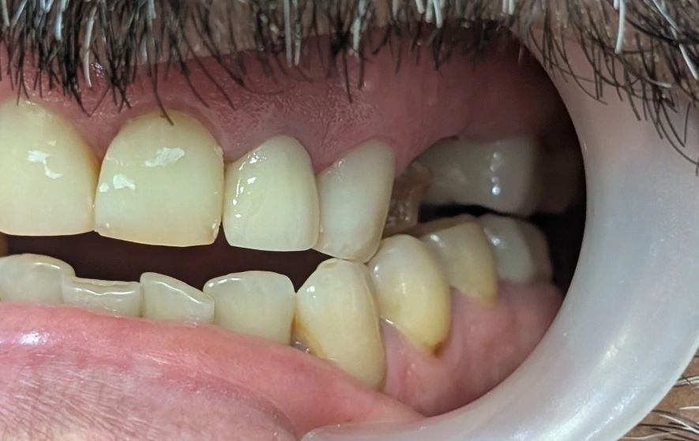

Chairside 15
اکلوژن کانینرایز در یک سمت، گروپفانکشن در سمت مقابل؛ وقتی ناهماهنگی الگوی طرفی، علامتدار میشود

-
بیمار با شکایت از تماس آزاردهندهٔ دندانهای نیش هنگام حرکات طرفی فک مراجعه کرده بود.
شکایت او مبهم نبود؛ دقیق و موقعیتمحور بود:
«وقتی فکم را به چپ و راست میبرم، نیشهایم اذیت میکنند.»
سابقهٔ درمانی نشان میداد که اخیراً برای دندان ۶ بالا چپ روکش جدیدی ساخته شده است.
در نگاه اول، ارتباط مستقیمی بین یک روکش مولر و درگیری کانینها به نظر نمیرسد— اما در اکلوژن، هیچ تغییری «موضعی» نیست.
-
در بررسی کلینیکی، نکتهٔ تعیینکننده آشکار شد:
در حرکت طرفی به یک سمت، الگوی هدایت کانینرایز بود،
اما در سمت مقابل، گروپفانکشن تا آخرین دندان خلفی برقرار بود.
یعنی دو سمت فک، با دو منطق اکلوژنی متفاوت کار میکردند.
-
این عدمتقارن، بهخودیخود لزوماً پاتولوژیک نیست،
اما وقتی در کنار شکایت تازهظهورِ بیمار پس از سمان شدن یک روکش جدید قرار میگیرد، روایت تغییر میکند.
بهاحتمال زیاد، درمانگر قبلی هنگام ساخت روکش دندان ۶، آن را در حرکت طرفی خارج از تماس تنظیم کرده— تصمیمی که در ظاهر «ایمن» به نظر میرسد، ولی در عمل، الگوی تماسهای طرفی آن سمت را بازنویسی کرده است.
-
و اینجاست که نکتهٔ اصلی پدیدار میشود:
مشکل، صرفاً مکانیکی نیست.
با تغییر الگوی اکلوژن، دادهٔ ورودی به سیستم عصبی پروپریوسپتیو تغییر میکند.
اکلوژنی که سالها برای مغز بیمار «نامرئی» بود— یعنی در سطح ناخودآگاهِ کنترل حرکتی پردازش میشد— حالا به یک محرک جدید و ناآشنا تبدیل شده است.
و هر محرک جدید در سیستم اکلوژنی، بهسرعت از آستانهٔ عادتپذیری عبور کرده و وارد آگاهی میشود.
-
این همان چیزی است که در ادبیات اکلوژن از آن با عنوان occlusal awareness یاد میشود:
بیمار ناگهان «اکلوژن خودش را حس میکند»— و این حس، صرفنظر از اینکه از نظر مکانیکی چقدر شدید باشد، آزاردهنده است.
بهعبارتی، ما با یک ترمیم تکواحدی، نهفقط توزیع نیرو، بلکه نقشهٔ ادراکی بیمار از فک خودش را به هم زدهایم.
-
شکایت از کانینها، تظاهر بالینی این بازنویسی است؛
نه لزوماً به این معنا که کانینها بیشازحد بار میگیرند، بلکه به این معنا که مغز بیمار، الگوی تماسی این سمت را دیگر «خودی» نمیشناسد.
-
سؤال اصلی این نیست که «روکش بلند است یا کوتاه؟»
بلکه این است که:
«این روکش، الگوی آشنای سیستم نوروماسکولار بیمار را حفظ کرده، یا آن را مختل کرده است؟»
در این کیس، پاسخ روشن بود.
شکایت بیمار از کانینها، بازتاب یک اختلال در ورودیهای پروپریوسپتیو بود— سرنخی از اینکه الگوی اکلوژنی طبیعیِ بیمار، با ساخت یک روکش، از حالت ناخودآگاه به حالت آگاه منتقل شده است.
-
بر همین اساس،
راهحل، تراش انتخابی کانین یا اسپلینت موقت نیست؛
تصمیم درمانی، بازسازی مجدد روکش دندان ۶ با بازگرداندن تماس طرفی صحیح و بازگرداندن الگوی آشنای گروپفانکشن همان سمت است— تا سیستم عصبی، اکلوژن را دوباره به ناخودآگاه بسپارد.
-
این کیس یادآوری میکند:
اکلوژن فقط یک پدیدهٔ بیومکانیکی نیست؛ یک پدیدهٔ ادراکی هم هست.
تغییر در یک واحد—حتی یک روکش تکدندانی در خلف— میتواند نقشهٔ پروپریوسپتیوِ کل قوس را به هم بزند،
و علامت، اغلب نه از جایی که بار بیشتری گرفته، بلکه از جایی ظاهر میشود که مغز بیمار، برای اولین بار آن را حس میکند.
محتوای این صفحه برای استفادهٔ آموزشی دندانپزشکان و دانشجویان دندانپزشکی تهیه شده است.